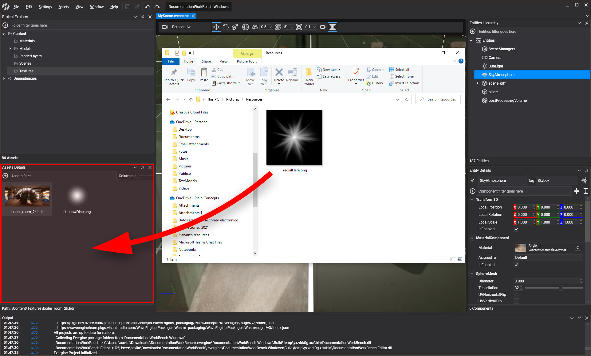

Create assets
In Evergine there are two ways of creating an asset depending on its type :
- Importing a resource file to the Assets Details panel, either with drag and drop or selecting the Import asset menu item. This works with images, 3d models and sound files.
- Creating an asset directly from Evergine Studio. Only for non resource and Evergine specifics assets.

Metafile generation
When creating an asset, a Metafile will be generated with the same name of the resource file. That file will contains all the properties and profile specifications of the asset. Every asset type has a different extension, described below.
Importing assets
Drag and drop the resource file
You can drag any file into the Evergine Studio to import that asset file into the project and create an asset with it. Depending of the file extension Evergine Studio will decide what kind of asset will be created in the panel folder:
| Asset type | Metafile extension | Supported file extensions |
|---|---|---|
| Texture | .wetx |
.jpg , .jpeg , .png , .bmp , .tga , .ktx , .dds , .hdr |
| Model | .wemd |
.gltf , .glb , .fbx , .3ds , .obj , .dxf , .dae |
| Sound | .wesn |
.wav , .mp3 , .ogg |
| File | .wefile |
Any other file. |
Import an asset by dragging and dropping a resource file from your File Explorer to the Assets Detail panel.

Use the import asset menu item
You can also import a resource file selecting the Import Asset menu item located in:
- In the Assets main menu.
- In the
 button on the Assets Details panel.
button on the Assets Details panel. - The Asset Details panel contextual menu.

Create assets without resource file.
Evergine uses a variety of assets that don't require external resource files. Those assets can be created directly from the Evergine Studio. Like in the previous section, you can access the Assets menu items in three places:
- In the Assets item in the main menu.
- In the button on the Assets Details panel.
- In the Assets Details contextual menu.

This way we can create the following assets:
| Asset type | Metafile extension | Additional files |
|---|---|---|
| Scene | .wesc |
.wescene file with the scene elements. A folder with the scene name that contains Scene subassets like the environment probe. |
| Effect (graphic effect and compute shader) | .wefx |
Sources folder, containing a Shader.fx file with the shader description |
| Sampler | .wesp |
|
| Material | .wemt |
|
| Render Layer | .werl |
|
| Post-Processing Graph | .wepp |
Note
If there is already an asset with the same name than the importing resource file, the new asset will be renamed adding a number suffix in the name. For example, texture.jpg would be renamed to texture(1).jpg and texture(2).jpg if another file with the same name is imported.